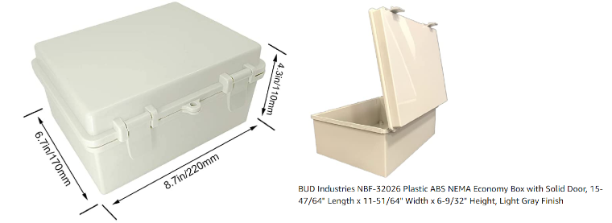

Price:
Weight:
Press arrow keys or right click and drag to translate
Left click and drag to rotate
Press "L" for perspective lighting
Scroll to zoom
Base Type
Base Type: If AMOS is equipped with a solar panel, there are two base configurations available: Catamaran and Surfboard. The Catamaran version is 6 feet long with twin pontoons for floatation and stability. As its name suggests, the Surfboard version is in the shape of a surfboard. It is slightly lighter and faster than the Catamaran version, although not quite as stable in the water. The surfboard version is 7.5 feet long. If the solar panel option is not selected, then additional 4 foot long base configurations: Short Catamaran and Short Surfboard are available.
Solar
Solar Panel: AMOS can be equipped with a 4 foot x 2 foot 100 Watt solar panel. This panel can be used to charge or maintain a charge on one of the available Lithium Phosphate batteries. Full-speed power consumption of all of the AMOS robots does not exceed 70 W, so AMOS has sufficient charge to operate indefinitely provided the weather is clear and the sun is higher than 45 degrees in the sky. Without sunlight, AMOS can operate for 1 hour at full speed on the 10 AH battery, 2.3 hours at full speed on the 23 AH battery, and 4.6 hours at full speed on the 46 AH battery. The solar panel is waterproof to an IP 68 rating, and comes with a compatible solar charge controller.

Propulsion
Propulsion: AMOS has 3 configurations available for propulsion through the water. The air propeller option uses a turn-able drone motor mounted on top of the back end of AMOS, and is recommended for operation in inland lakes and streams, or sheltered coastal areas where there might be significant vegetation or other debris in the water. The single water propeller option uses a turn-able water propeller below the water line and is mounted off the back end of AMOS. It provides more net thrust than the air propeller, but can sometimes become entangled in vegetation or floating debris, even if the propeller cage option is selected.The dual water propellers option uses two fixed water propellers mounted at the back left and right corners of AMOS for propulsion and differential steering. This is the highest net thrust option, but similar to the single water propeller, may become entangled in vegetation or other debris, depending on water conditions.
Propeller cage: Two options are available for protecting the air or water propellers on AMOS. The air propeller can use a plastic mesh fixed to 4 vertical poles to form a protective perimeter fence around the rotating air propeller. This protects it from damage against accidental contact with low hanging tree branches or other obstacles. If water propeller(s) are used, then a small plastic cage can be mounted on the intake side of the propeller to help guard against large debris or vegetation in the water.

Electronics Boxes
Electronics Boxes: Two sizes of electronics boxes are available for housing the electronics and processors used within AMOS. The large box size is X1 mm x Y1 mm x Z1 mm and the small box size is X2 mm x Y2 mm x Z2 mm. All boxes come with re-usable dessicant material, leak sensors, and humidity sensors to ensure that things stay dry. Cabling between boxes is provided by means of waterproof cable glands. Two of the large boxes are required for housing the necessary AMOS electronics and processors, or three of the small boxes could be used to house the same. If the small boxes are used, they are embedded into the boat's hull to improve its aerodynamic efficiency.

Battery
Battery: The battery options available on AMOS all use 12 V Lithium Phosphate technology. Each battery is supplied with a wall charger and can also be charged with a solar panel and solar charge controller if the solar panel option is selected. A large size electronics enclosure is required if the 23 AH battery is selected. The 46 AH battery comes with its own large enclosure. The three battery sizes can supply full speed power (in the absence of solar or other charging) for 1 hour, 2.3 hours, or 4.6 hours, according to the size selected.

Communications (select one or more)
Communications: Several communications options are available for AMOS. The wireless serial link uses a pair of AMOSRemote modules. One is situated inside AMOS and the other is attached to a host computer or linked via Bluetooth to a smartphone. The pair of AMOSRemote modules form a direct low-bandwidth wireless, serial linkage. This is ideal for configuring the boat, viewing its position and status, and downloading data, provided the pair of AMOSRemote modules are within 500 m of each other and the size of data being transmitted is relatively modest (i.e. typically less than 1 MByte file size).
The Cellular USB stick provides a wireless hotspot onboard AMOS, allowing it to connect to the Internet, provided a cellular communications tower is within range. With this option, both AMOS and the user monitoring or controlling it log into a pre-configured Internet server address. This option is ideal for sending and receiving large data files, such as image files which are typically a few MBytes each. The satellite modem option is a requirement when there is neither line of sight, nor any standard cellular service available. Monthly service fees apply for both the cellular USB stick and satellite modem options.